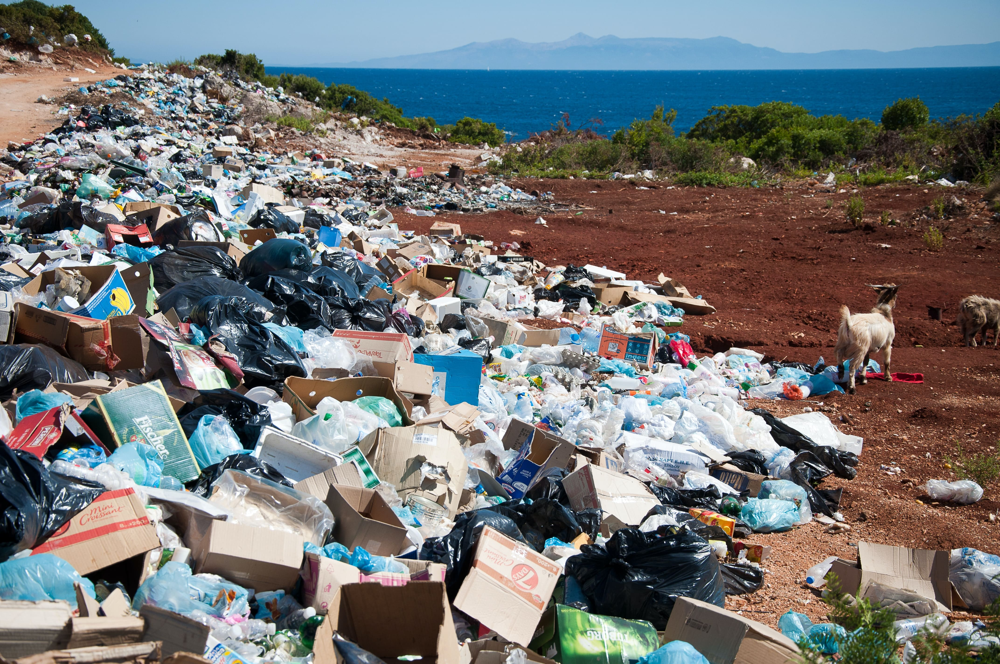

FAST FASHION
El fast fashion (“moda rápida" en español) es un modelo de producción y consumo que se caracteriza por la fabricación de prendas de vestir de bajo costo (para atraer a los consumidores a comprar con frecuencia) y alta velocidad.
En este modelo, las empresas de moda buscan reducir los costos de producción al mínimo y maximizar la eficiencia en la fabricación de prendas. Esto implica utilizar materiales y técnicas de producción de bajo costo y calidad, así como emplear a trabajadores con salarios bajos y condiciones laborales precarias.
El fast fashion ha sido criticado por su impacto negativo en el medio ambiente, ya que la producción masiva de prendas contribuye a la generación de grandes cantidades de residuos textiles y la contaminación del agua y el aire. Además, su modelo de negocio fomenta el consumo excesivo y desechable, lo que contribuye a la creciente acumulación de basura y la emisión de gases de efecto invernadero.
La alarmante huella hídrica de la industria textil
La producción de textiles consume enormes cantidades de agua, con un solo par de jeans que requiere aproximadamente 7.500 litros de agua. La industria textil es responsable del 20% de la contaminación del agua en todo el mundo. Las emisiones de sustancias químicas y colorantes tóxicos también son una gran preocupación en la producción de textiles.

La impactante cantidad de ropa que desechamos cada año
Cada año, se desechan aproximadamente 92 millones de toneladas de ropa a nivel mundial. Según la Fundación Ellen MacArthur, si no se toman medidas para abordar esta tendencia, se espera que la industria de la moda emita 2.8 mil millones de toneladas de gases de efecto invernadero para 2030. Es hora de tomar medidas para reducir el impacto de la industria textil en el medio ambiente.